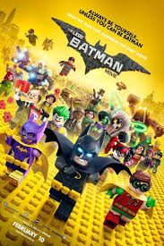

Logan is a proper sendoff for the Wolverine character in the X-Men/Marvel cinematic universe. Hugh Jackman has invested 17 years
portraying Logan on the big screen. The movie is an emotional rollercoaster some touching moments. Premise: Logan finds out he has
a daughter and fights to protect her while avoiding the antagonist. Pros: The script is well-written and the character development
is good. The characters are allowed more freedom in an R rated movie, thereby increasing the realism. Cons: That's it for Hugh Jackman.
Final verdict: 5/5

Lego Batman Movie
The Lego Batman movie is a "fun for the family" movie. There are plenty of laughs throughout the movie. In fact, the sound effects for
the movie almost had me in tears from laughter. The script is good and the violence is minimal. As a Batman fan, I found it a good alternative
from the traditional "dark" themed Batman movies.
Premise: Batman takes on an orphan as a son. The world is threatened, once again, by villanous characters.
Pros: The acting, animation and script are spot on.
Cons: There are probably a few but I have not noticed because I was too busy laughing.